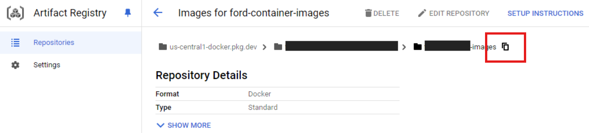

Cloud Run
Cloud Run is a managed compute platform that lets you run containers directly on top of Google’s scalable infrastructure. You can deploy code written in any programming language on Cloud Run if you can build a container image from it. In short, Cloud Run allows developers to spend their time writing their code, and very little time operating, configuring, and scaling their Cloud Run service. You don’t have to create a cluster or manage infrastructure in order to be productive with Cloud Run.
In this tutorial, you will learn how to schedule a job to execute a Python script on GCP (similar to scheduling queries in BigQuery):
- Required files:
main.py: a Python applicationrequirements.txt: a recipe to create the Python environmentContainerfile: a recipe to create a container
- Tools:
podman: to create a container of the Python script and its dependenciesgcloud: to interact with Google Cloud Platform
Sources:
- What is Cloud Run
- Creat jobs
- Execute jobs on a schedule
- Cron job format and time zone
- Configure secrets
- Quickstart: Build and deploy a Python web app to Cloud Run
- Getting Started with Podman
Requirements
To create a container, you need a Containerfile. You
can generate one using the Nano text editor by running:
# Make a new directory
mkdir cloud-run-demo
# Go to the new directory
cd cloud-run-demo
# Make a Containerfile
nano ContainerfileNext, copy the following into the Containerfile (this
is just an example; feel free to customize it as needed):
# Use Python slim image from Docker Hub
FROM python:3.13.2-slim
# Set the working directory within the container
WORKDIR /app
# Copy requirements.txt first for efficient caching
COPY requirements.txt .
# Install dependencies
RUN pip install --no-cache-dir -r requirements.txt
# Copy the application code
COPY main.py .
# Set the entrypoint for the container (the command that runs when the container starts)
CMD ["python", "main.py"]Press Ctrl + X, then Y, then
Enter to write the file and exit.
We also need a requirements.txt file to list the
required packages. Use the nano text editor to create it:
nano requirements.txtCopy the following into the requirements.txt file
(this is just an example; be sure to list the specific dependencies
for your Python application):
pandas
pandas-gbqPress Ctrl + X, then Y, then
Enter to write the file and exit.
Finally, we need to add our Python code. As an example, create a
main.py file using nano by running
nano main.py, then copy the following code into the
file:
from google.cloud import bigquery
import pandas_gbq
client = bigquery.Client()
sql = """
SELECT * FROM bigquery-public-data.ml_datasets.penguins
WHERE body_mass_g < 3500 AND sex = 'FEMALE'
"""
df = client.query(sql).to_dataframe()
df.to_gbq('BQ_Tutorial.penguins_data', if_exists='replace')Press Ctrl + X, then Y, then
Enter to write the file and exit.
Build the Container and push it to GCP
First, locate the destination for your container in GCP Artifact Registry and copy the repository path:

The path should be like:
<region>-docker.pkg.dev/<project-id>/<images-directory>.
To build the container using podman, execute the
following command:
podman build -t <container-path>/<app-name>:<tag> .The app-name must use only lowercase alphanumeric
characters and dashes, cannot begin or end with a dash, and cannot be
longer than 63 characters. For instance, for my project ID, path, and
app ID the command will look like this:
podman build -t us-central1-docker.pkg.dev/proj-58536f721/container-images/pandas-app:1.0-demo .Before pushing the container to GCP Artifact Registry, you need to log in to your GCP account. Run the following command to authenticate:
gcloud auth loginThen, configure authentication for the Artifact Registry:
gcloud auth configure-docker <region>-docker.pkg.devReplace <region> with your GCP region (e.g.,
us-central1).
Now, use podman to push the container to GCP Artifact
Registry by running the following command:
podman push <container-path>/<app-name>:<tag>Replace
<container-path>/<app-name>:<tag> with
the actual image path, name, and tag, which will look something
like:
podman push us-central1-docker.pkg.dev/proj-58536f721/container-images/pandas-app:1.0-demoRunning a Cloud Run job
To run the Cloud Run job, first set the project ID and then execute the following command:
# Set project ID
gcloud config set project <project-id>After setting the project ID, run the Cloud Run job using:
# Create the job
gcloud run jobs create <job-name> \
--image <container-path>/<app-name>:<tag> \
--region <region>Some other options that can be added are:
--cup # set number of cpus (default 1)
--memory # set memory limit. Ex: 2G, 256M (default 512M)
--max-retries # Number of times a task is allowed to restart in case of failure (default 3)
--service-aacount # Specify the service account associated with the service
--set-env-vars # List of key-value pairs to set as environment variables. Ex: --set-env-vars ENV=myenv,OTHER_ENV=otherenv
--env-vars-file # Path to a local YAML file with definitions for all environment variables. Example YAML content: KEY_1: "value1"
--set-secrets # Specify secrets to provide as environment variables. Ex: --set-secrets ENV=mysecret:latest,OTHER_ENV=othersecret:1
--vpc-connector # Set a VPC connector for this resource
--vpc-egress all-traffic # Sends all outbound traffic through Direct VPC egress or the VPC connectorFor a full list of available options when creating a job, refer to the gcloud run jobs create command line documentation. After creating the job, we can execute it by:
gcloud run jobs execute <job-name> --region <region>Note that the job-name must use only lowercase
alphanumeric characters and dashes, cannot begin or end with a dash,
and cannot be longer than 63 characters. For instance:
gcloud run jobs create cloud-run-demo \
--image us-central1-docker.pkg.dev/proj-58536f721/container-images/pandas-app:1.0-demo \
--region us-central1And execute it by:
gcloud run jobs execute cloud-run-demo --region us-central1Scheduling jobs
To execute a Cloud Run job on a schedule, you can use Cloud Scheduler. Here’s the command to set up a scheduled job:
gcloud scheduler jobs create http <scheduler-job-name> \
--location <region> \
--schedule <cron-format> \
--uri "https://<region>-run.googleapis.com/apis/run.googleapis.com/v1/namespaces/<project-id>/jobs/<job-name>:run" \
--http-method POST \
--oauth-service-account-email <service-account>@<project-id>.iam.gserviceaccount.comTo update a previously scheduled job, we can run:
gcloud scheduler jobs update http <scheduler-job-name> \
--location <region> \
--schedule <new-schedule> \And to list all the scheduled jobs in the project, run:
gcloud scheduler jobs list --location <region>For instance, to execute the cloud-run-demo job every Monday at
noon UTC (0 12 * * 1):
gcloud scheduler jobs create http scheduled-cloud-run-demo \
--location us-central1 \
--schedule "0 12 * * 1" \
--uri "https://us-central1-run.googleapis.com/apis/run.googleapis.com/v1/namespaces/proj-58536f721/jobs/cloud-run-demo:run" \
--http-method POSTAfter creating the Cloud Scheduler job, you can verify its configuration and see when it’s next scheduled to run using the following command:
gcloud scheduler jobs describe scheduled-cloud-run-demo --location us-central1Managing secrets
📙 Important note: Never hard-code your credentials and secrets in your code, and avoid committing them to version control or including them in containers.
The best practice for managing credentials in GCP is to store them in the Secret Manager and pass them to the container as environment variables. To create a secret, run:
gcloud secrets create <secret-name> --replication-policy "automatic"To add the a secret to it, run:
gcloud secrets versions add <secret-name> --data-file /path/to/secret/fileFor instance:
# To create the secret
gcloud secrets create cloud-run-demo-secret --replication-policy "automatic"
# Add a secret
gcloud secrets versions add cloud-run-demo-secret --data-file demo-secret.txt
# List secrets
gcloud secrets listWe can provide credentials to the Cloud Run job by using the
--set-secrets DEMO_SC=cloud-run-demo-secret:latest option
when creating the job.
Clean up
To remove the demo container image from the Artifact Registry, you can run:
gcloud container images delete <container-path>/<app-name>:<tag>To remove the Cloud Run job, run:
gcloud run jobs delete <job-name> --region <region>To remove the scheduler, run:
gcloud scheduler jobs delete <scheduler-job-name> --location <region>And to remove the secret, run:
gcloud secrets delete <secret-name>For instance:
# Delete the image
gcloud container images delete us-central1-docker.pkg.dev/proj-58536f721/container-images/pandas-app:1.0-demo
# Delete the job
gcloud run jobs delete cloud-run-demo --region us-central1
# Delete the scheduler
gcloud scheduler jobs delete scheduled-cloud-run-demo --location us-central1
# Delete the secret
gcloud secrets delete cloud-run-demo-secret